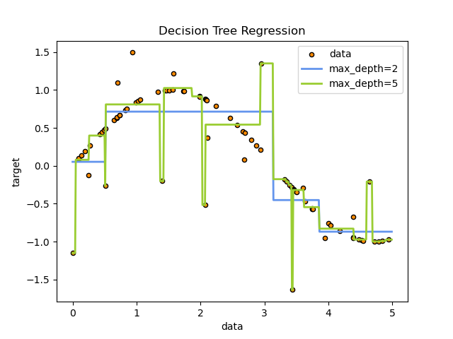
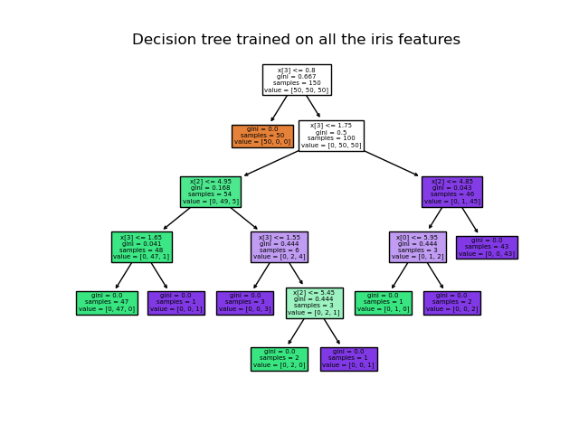
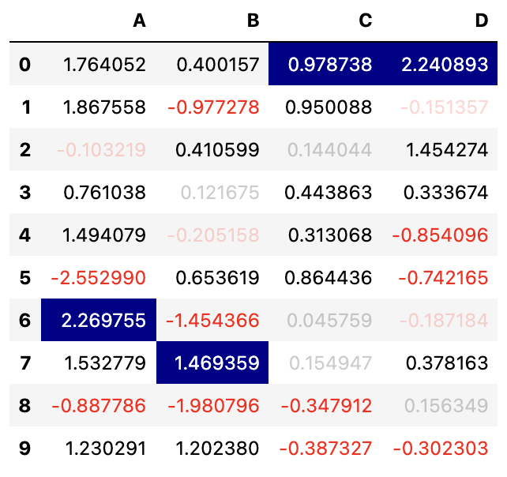

Possible Extra Topics#
One of the rubric items for the course project is to include something “extra” that wasn’t covered in Math 10. Here are a few possibilities. It’s even better if you find your own extra topic; it can be anything in Python that interests you.
Decision Trees and Random Forests#


Decision trees are a fun and understandable supervised machine learning model. There are versions for both classification and regression, and it is definitely something I would have covered if we had more time. Building off of decision trees are random forests, another topic I would have liked to cover.
K-Nearest Neighbors#
Another understandble supervised machine learning model is K-Nearest Neighbors. It can be used for classification or regression, but is typically used for classification. This topic also provides a good example of the potential for overfitting (when a small number of neighbors is used). There is some information about this topic in the course notes by Christopher Davis from Winter 2022.
Neural Networks#
In both Fall 2021 and Winter 2022, Math 10 included a significant portion on Neural Networks. These are a fundamental (maybe the most fundamental) area of modern Machine Learning. If you want to try learning about them, that would be a great extra topic. Fall 2021 used the library TensorFlow (especially using the command from tensorflow import keras). Winter 2022 used the library PyTorch. Overall TensorFlow seems easier to use (but PyTorch teaches some fundamentals of Object Oriented Programming). This 3Blue1Brown video is a great introduction, and was assigned watching during Fall 2021.
Choosing parameters#
scikit-learn user guide. A Machine Learning topic I would like to understand better is how to choose parameters (for example, the number of clusters when doing clustering, or the depth of a decision tree). That link provides some guidance, but it is a big topic and there are many different approaches.
pandas styler#

See these examples in the pandas documentation. This provides a way to highlight certain cells in a pandas DataFrame, and is good practice using apply and applymap.
Kaggle#
A general way to get ideas is to browse Kaggle. Go to a competition or dataset you find interesting, and then click on the Code tab near the top. You will reach a page like this one about Fashion-MNIST. Any one of these notebooks is likely to contain many possibilities for extra topics.
Big Data(sets)#
Deepnote does not allow files bigger than 100mb to be uploaded. Many real-world datasets are bigger than this. Deepnote does definitely work with larger datasets. If you end up using a larger dataset, describe how you made it work in Deepnote. Some general guidelines are listed in the Deepnote documentation.
Different Python Libraries#
If you want to use a Python library that isn’t by default installed in Deepnote, you can install it yourself within Deepnote, using a line of code like the following, which installs the vega_datasets library. Notice the exclamation point at the beginning (which probably won’t appear in the documentation you find for the library).
!pip install vega_datasets
Other Libraries#
Here are a few other libraries that you might find interesting. (Most of these are already installed in Deepnote.)
SymPy for symbolic computation, like what some of you did in Math 9 using Mathematica.
Pillow for image processing.
re for advanced string methods using regular expressions.
Seaborn and Plotly. We have seen a little bit of both during Math 10 this summer session. A nice topic would be to explore these libraries in much more depth.
ipywidgets provides a way to add interactivity to a Jupyter notebook, but, as far as I know, not all of it works in Deepnote.
ChatGPT#
One possibility is that you could get help writing your project from ChatGPT, documenting along the way how the process is working. That would be interesting, just keep it clear what is your work and what is provided by ChatGPT.
![Created in deepnote.com]() Created in Deepnote
Created in Deepnote